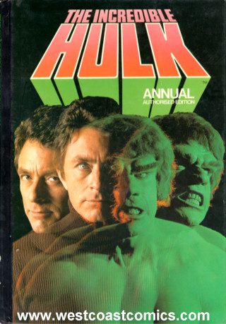

Dec 30 2005

DEUTSCHLAND UBER PALLES
La SAGA dei TEDESCHI DI MERDA CONTINUA, e non avra’ mai FINE:
1) Acquisto una batteria da un TEDESCHEN DI MERDEN, che dice nell’inserzione che PAYPAL PER LUI E’ OK
2) Chiedo per email in INGLESE di sapere qual’e’ il suo account paypal, per poterlo pagare. Gli chiedo inoltre di rispondermi IN INGLESE.
3) Ricevo un messaggio automatico in TEDESCO con dati di un conto bancario.
4) CHIEDO NUOVAMENTE l’account paypal. ricevo ANCORA RISPOSTE IN TEDESCO
5) chiedo ANCORA ACCOUNT PAYPAL, ricevo ancora RISPOSTE IN TEDESCO E NESSUN ACCOUNT PAYPAL, NON SO COME PAGARE STO COGLIONE.
6) la cosa va avanti cosi’ per 2 mesi, tramite mail private e mail del sistema di ebay.
7) lo STRONZO DI MERDA mi manda una AMMONIZIONE DI PAGAMENTO. divento un ANIMALE, gli SCRIVO IN INGLESE e gli CHIEDO L’ACCOUNT PAYPAL PER PAGARLO.
8) il COGLIONE MI RISPONDE IN TEDESCO, e dell’account paypal NEANCHE L’OMBRA
9) gli mando altri 2 mail in una settimana, nessuna risposta da parte del cazzone
10) mi arriva una INGIUNZIONE DI PAGAMENTO con preavviso di chiusura del MIO ACCOUNT PAYPAL
11) divento UN ANIMALE, UNA PALLA DI NERVI, e scrivo stavolta all’ assistenza clienti di EBAY, citando tutte le email che ho spedito a sto STRONZO, e RISCRIVO AL COGLIONE in LETTERE MAIUSCOLE
12) il COGLIONE MI RISCRIVE IN TEDESCO QUESTA COSA:
Messaggio dell'utente sull'oggetto #6449403396Handy-foto-pc-de
Diese Nachricht wurde gesendet, nachdem das Angebot beendet wurde.
gzaverio ist der Käufer.
I NEED YOUR PAYPAL ACCOUNT TO PAY YOU
PLEASE GIVE ME YOUR PAYPAL ACCOUNT
WHAT'S YOUR PAYPAL EMAIL?
QUALE CAZZO E' LA TUA FOTTUTA EMAIL PAYPAL???
Beantworten Sie diese Frage über die Funktion "Meine Nachrichten".
Die Mitteilung läuft eigentlich automatisch über Afterbuy ab. Es kommt jedoch ab und zu vor das die Nachrichten im Ordner für unerwünschte E-Mail's landen.
Hier noch einmal unsere Bankverbindung.
Bitte überweisen Sie auf unser Konto der:
Hypovereinsbank Dresden
Kto. Nr.: 357981751
Blz.: 85020086
Kontoinhaber: Buder & Wolfram
Sie können auch mit Paypal bezahlen (0,75? extra). Bitte senden sie ihre Paypal-Zahlung an Verkauf@vhbw.de
Für Auslandsüberweisung / For international Banktransfer
BIC/SWIFT: HYVEXXXXXXX
IBAN: DE078502008XXXXXXX
Um die Überweisung bearbeiten zu können geben Sie bitte die Kundennummer oder den Ebaynamen an/ Please write your Ebaynick in your Banktransfer.
Mit freundlichen Grüßen
T. Wolfram
Bitte besuchen Sie uns auch unter:
www.handy-foto-pc.de
Wenn sie auf diese Email antworten, lassen sie bitte den Originaltext stehen, so ersparen sie uns viel Arbeit und sie bekommen mit Sicherheit schneller die Antwort auf Ihre Frage! Bitte geben Sie in Emails Ihren Ebaymitgliedsnamen oder die Rechnungsnummer des betroffenen Artikels an! Vielen Dank!
Unsere Bankdaten erfahren sie in der Afterbuy-Abwicklung. Dahin gelangen sie über den GELBEN STREIFEN ganz unten in jeder unserer Ebay-Angebote. Dort erfahren Sie auch unsere Bankverbindung!!!
PAZZESCO

leggo FINALMENTE IL SUO ACCOUNT PAYPAL, e GLI RISPONDO COSI’:
Thu, Dec 29, 2005 at 10:16:14AM +0100, verkauf@vhbw.de wrote:
> Die Mitteilung läuft eigentlich automatisch über Afterbuy ab. Es kommt jedoch
+ab und zu vor das die Nachrichten im Ordner für unerwünschte E-Mail's landen.
> Hier noch einmal unsere Bankverbindung.
> Sie können auch mit Paypal bezahlen (0,75? extra). Bitte senden sie ihre
+Paypal-Zahlung an Verkauf@vhbw.de
Finalmenten ho ricevuten il tuo cazzen del porco ddien di indirizzo paypal a cui pagarti sta cazzo di batteria dei miei coglionen di cristen.
Sara' mia curen, grattandomi le PALLEN SUCHEN, pagarti sti cazzen di solden al piu' presten possibilen
Porco il tuo dien, ti auguro happy new year di palle nyborg e palle christensen, porco ddien! :)
HAPPY NEW YEAR!!!
.__o.o__. (\/)
(\/) /\/ \ \/
\/ || /\
SmMmACcCck!!!
(bacetto.txt, che si vede una merda perche' pure sto WORDPRESS DEI MIEI COGLIONI CI SI METTE PURE LUI PORCO CRISTO MALATO)
--
sono SENZA PAROLE, i tedeschi sono UN CANCRO